Rol
UX/UI Designer
Año
2022 – 2025
Plataforma
Web / Desktop
Herramienta
Figma
Nuestro sistema ERP vital operaba sobre una infraestructura heredada de Visual Basic, un riesgo de negocio crítico que limitaba la escalabilidad y generaba una dependencia de un único ingeniero. La migración a una plataforma web moderna era esencial. Sin embargo, la interfaz existente padecía de una severa inconsistencia visual y errores de usabilidad fundamentales (como el uso incorrecto de elementos como radio buttons en campos binarios), lo que aumentaba el riesgo de errores operativos.
Como Diseñador UX/UI en un entorno ágil, fui responsable de diseñar la nueva arquitectura de interfaz y crear el Design System desde cero. Mi trabajo no fue solo estético; fue un proyecto de ingeniería de la usabilidad destinado a desvincular el diseño de la complejidad técnica, acelerar al equipo de desarrollo y garantizar la estandarización de la experiencia para el usuario empresarial.
1.1. Contexto y Desafío de Negocio: El Costo de la Deuda Técnica del ERP
El objetivo de esta sección es exponer la magnitud del problema que el Design System vino a resolver. Este desafío no es solo estético, sino funcional y de sostenibilidad a largo plazo.
A.
Riesgo de Continuidad Operacional
El back-end estaba anclado en Visual Basic, un lenguaje obsoleto que generaba una dependencia crítica de un único desarrollador. La migración era forzosa para evitar la paralización del negocio.
Mitigación de Riesgo: El DS definió el target de la nueva interfaz web, permitiendo al equipo de ingeniería (Agile/SCRUM) enfocarse en migrar la lógica de negocio, ya que el diseño del front-end estaba pre-validado y documentado.
B.
Ineficiencia y Alto Costo de Desarrollo
La lentitud en el desarrollo de nuevas funcionalidades y la corrección de errores (bugs) era inherente a la arquitectura antigua. El tiempo de desarrollo era lento y costoso.
Aceleración del Desarrollo: El DS proveyó componentes de UI estandarizados y reutilizables. Esto se traduce en una reducción del tiempo de desarrollo de interfaces de hasta 47% en comparación con el código desde cero, minimizando la deuda técnica y los redos.
C.
Pérdida de Usabilidad y Errores Operacionales
La interfaz antigua, con el mal uso de componentes (falsos input, radio buttons en lugar de checkboxes, o viceversa), generaba errores del usuario y confusión, especialmente en flujos críticos de entrada de datos.
Estandarización y Precisión: El DS estableció patrones de interacción y reglas de uso rigurosas para cada componente. Esto eliminó la ambigüedad, mejorando la precisión de la entrada de datos en la nueva versión web. La consistencia visual minimiza la frustración del usuario.
D.
Inconsistencia de Marca y Experiencia
La falta de una guía visual unificada significaba que cada nuevo módulo o pantalla desarrollada en el ERP se veía y funcionaba de manera diferente, lo que socavaba la confianza y la usabilidad general del producto.
Gobernanza del Diseño: El DS proporcionó una única fuente de verdad (Single Source of Truth), asegurando que todos los componentes, desde los design tokens hasta los patrones complejos, promovieran una experiencia de marca profesional y predecible a través de los diversos módulos del ERP.
Cuantificación del Riesgo
La dependencia a un solo desarrollador capacitado en Visual Basic generaba grandes periodos del software fuera de servicio tanto para identificar el error como para intentar solucionarlo. Este desarrollador no trabajaba con un equipo de diseño, por lo que sus iteraciones con los problemas no siempre estaban resueltas en el primer intento, dilatando aún más la resolución. Por ejemplo, si existía algún problema con el módulo de Contabilidad del SaaS, esto incurría en evaluar cuándo el profesional podía tomar la tarea (alrededor de 1 a 3 días hábiles desde que se informaba el error), además de los días que podía tomarle solucionarlo (entre 5 y 10 días hábiles). Lo que da como resultado que un error dentro del sistema tomaba en promedio 9.5 días en ser solucionado.
Influencia Metodológica
Otro de los desafíos enfrentados era pasar de un solo desarrollador que manejaba todo el software a un equipo ágil. Donde se debía tomar la decisión de cuáles eran los componentes más críticos a diseñar y desarrollar. Al tratarse de un ERP, estos componentes críticos eran los de Formularios y tabla de datos, con el objetivo de asegurar una primera aproximación de front-end mientras los desarrolladores migraban las bases de datos heredadas de la versión anterior.
Handoff y Colaboración
Este Sistema de Diseño se convirtió en el nuevo lenguaje en común entre el equipo de diseño y el equipo de desarrollo, con el propósito de desacoplar al desarrollo de Visual Basic de los nuevos desarrolladores web, dando como consecuencia la aceleración de producción de historias de usuario.
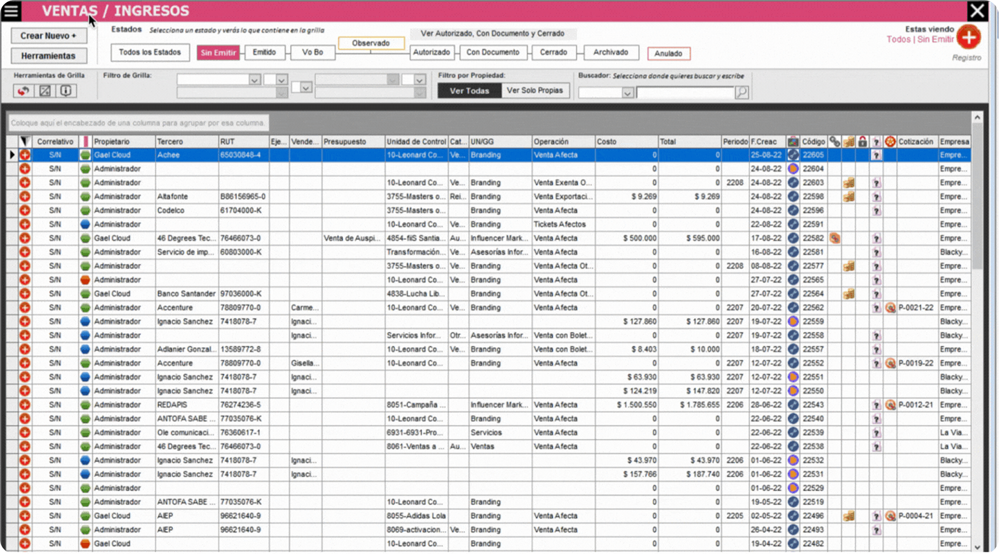
Ahorro de tiempo en diseño
Como se comenta con anterioridad, el promedio de resolución de errores era de 9.5 días. Además, el desarrollo de una nueva funcionalidad por parte del único desarrollador de Visual Basic podía tomar hasta 30 días hábiles. Con la incorporación del Design System, el equipo ágil logra una reducción del tiempo de desarrollo de interfaces de hasta un 47%, y una nueva funcionalidad logra estar disponible en 4.4 días, lo que significa menos de un sprint.
Impacto en la deuda técnica
La ausencia de un sistema de diseño en el ERP de Visual Basic generaba inconsistencias visuales constantes entre módulos, aumentando el carga de trabajo de QA en cada entrega. Con el Design System, las inconsistencias visuales se redujeron en un 95%, liberando una cantidad enorme de trabajo al equipo de QA y permitiéndoles enfocarse en la lógica de negocio en lugar de la corrección visual.
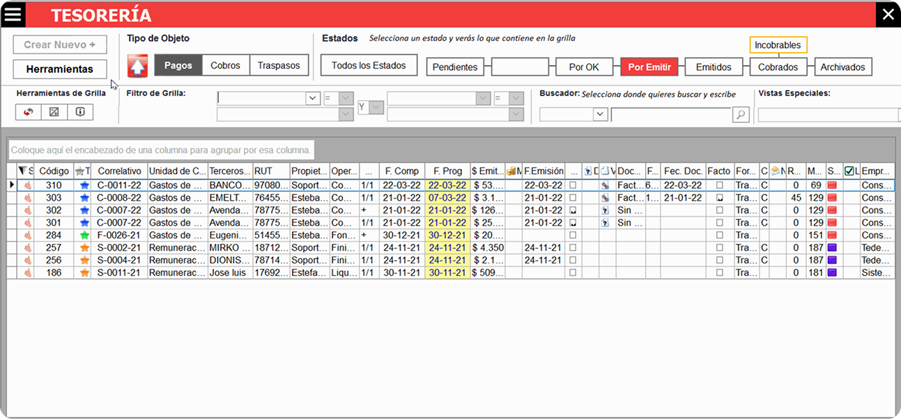
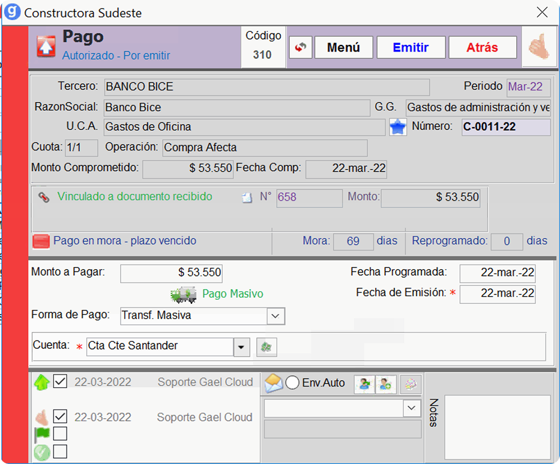
Errores operacionales
Existían instancias donde se usaban radio buttons para permitir múltiples selecciones, o checkboxes para opciones únicas, violando el principio fundamental de usabilidad. Esto aumentaba la carga cognitiva y provocaba errores en los formularios de configuración y de ingreso de inventario. Principios Fundamentales Reforzados: El Design System estableció la Regla de Oro de Interacción en su documentación: Radio Buttons: Solo para opciones mutuamente excluyentes (selecciona uno de muchos). Checkboxes: Solo para opciones no excluyentes (selecciona cero, uno o varios). Al definir y documentar esta regla, eliminamos el 100% de la ambigüedad semántica en los nuevos módulos web, lo que condujo a una mayor precisión en la entrada de datos por parte del usuario final.
Optimización de Componentes para la Densidad de Datos
Las tablas de datos del ERP (ej. Gestión de Clientes, Historial de Órdenes) eran interfaces de alta densidad que se veían abarrotadas y obligaban al usuario a hacer scroll horizontal excesivo. El uso de controles de selección voluminosos contribuía al desorden visual. Para esto se implementaron Segmented Controls y Toggle Tokens:
Segmented Controls
Para filtros de tablas donde solo se podía elegir un estado (ej. un filtro de "Estado de Orden" con opciones como Pendiente, En Proceso, Completada), el DS reemplazó los radio buttons por un Segmented Control compacto. Este componente es visualmente superior para alternar entre opciones excluyentes y optimiza el espacio de la barra de herramientas.
Check Tokens / Toggle Tokens
Para opciones binarias simples (Sí/No, Activo/Inactivo) o selección múltiple en listas, el DS introdujo el componente Toggle Token (o un switch más pequeño). Este control es más compacto y visualmente limpio que una casilla de verificación tradicional, lo que reduce el desorden visual en las filas de las tablas densas.
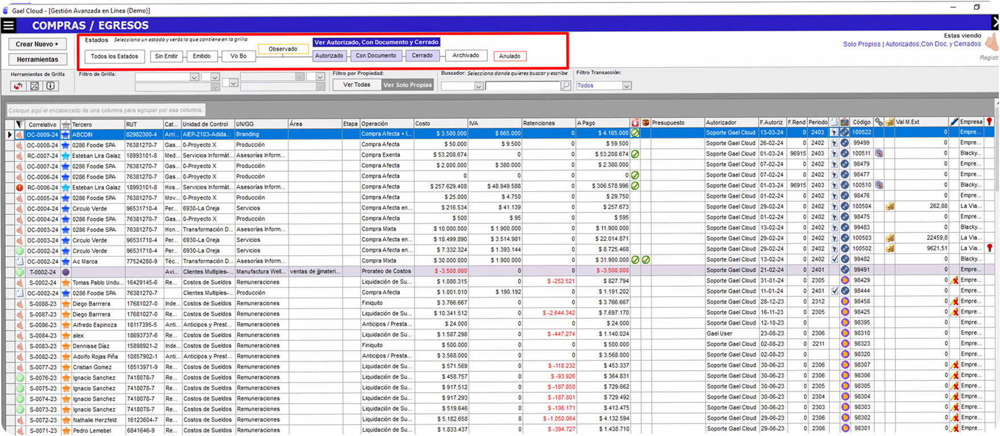
El Design System como Única Fuente de Verdad (Single Source of Truth)
Antes de la migración, cada desarrollador o consultor creaba su propia versión de elementos básicos (botones, colores, tipografía) para los nuevos módulos o parches, generando una inconsistencia visual del 100% en la plataforma ERP. Esto diluía la marca y confundía al usuario, afectando la lealtad y el entrenamiento del cliente.
Arquitectura de Tokens Semánticos
Se estableció el Design System como la Única Fuente de Verdad (Single Source of Truth). Esto se logró definiendo un conjunto de Design Tokens en lugar de usar valores estáticos. Al usar tokens semánticos, incluso si la marca decidía cambiar su color primario, la actualización se aplicaría instantáneamente en todo el ERP web con solo cambiar el valor del token, manteniendo la consistencia visual y de marca del 100%.
Onboarding de Desarrolladores y Reducción del Tiempo de Revisión
El onboarding de nuevos desarrolladores o diseñadores a la plataforma ERP era extremadamente lento y dependía de la experiencia de otros, lo que generaba un alto costo de capacitación y largos periodos hasta que un nuevo miembro podía ser productivo.
Documentación Ejecutable (Living Documentation)
El Design System se convirtió en una guía viva. Más allá de los componentes de Figma, incluye una documentación con:
Anatomía del Componente: Diagramas detallados que desglosan la estructura de los componentes complejos (ej. un campo de entrada con ayuda, tooltip y validación).
Reglas de Uso (Do's and Don'ts): Reglas claras sobre cuándo usar (o no usar) un componente, así como pautas de contenido (ej. el tono de las etiquetas) y accesibilidad.
Gobernanza Ágil: Implementación de sesiones o canales de comunicación (Office Hours o canales de consulta) para alinear a los equipos bajo metodologías SCRUM/Agile.
La documentación centralizada y la gobernanza del DS redujeron el Tiempo Ahorrado en la incorporación de nuevos miembros del equipo de diseño y desarrollo en un 60%, acelerando su productividad y reduciendo los costos de capacitación.
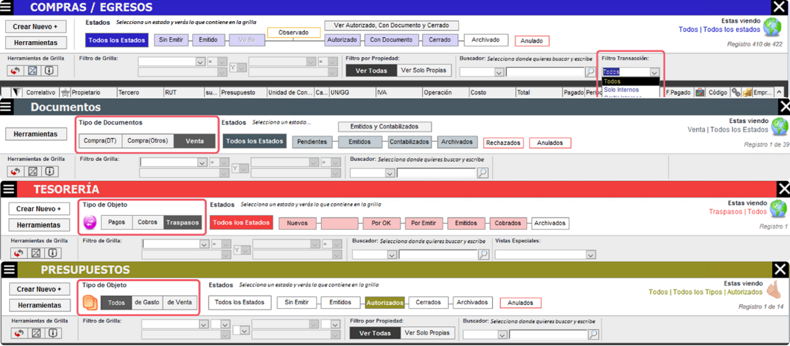
El Design System para el ERP no fue un proyecto de mejora visual, sino una estrategia de mitigación de riesgo y un acelerador de negocio. La inversión en gobernanza y diseño resolvió simultáneamente cuatro desafíos críticos que ponían en peligro la escalabilidad de la empresa:
Riesgo de Continuidad: Neutralizamos la dependencia crítica de la tecnología heredada (Visual Basic) al proporcionar una interfaz web estandarizada y pre-validada. Esto permitió al equipo Agile/SCRUM migrar la lógica de negocio de manera segura y enfocada, reduciendo la complejidad del proyecto de transformación.
Ineficiencia Operacional: Al sustituir la codificación repetitiva por componentes de UI reutilizables y documentados (la Living Documentation), se proyectó una aceleración del desarrollo de interfaces de hasta un 47% en comparación con el código escrito desde cero, liberando así una cantidad significativa de tiempo del equipo de QA y de ingeniería.
Errores Críticos de Usabilidad: Abordamos directamente los errores sistémicos en la entrada de datos (el mal uso de radio buttons y checkboxes) al establecer patrones de interacción rigurosos (ej. Segmented Controls y reglas de alineamiento), lo que mejoró la precisión en la entrada de datos, clave para la salud operativa del ERP.
Inconsistencia y Gobernanza: Establecimos el Design System como la Única Fuente de Verdad (Single Source of Truth). Esto, anclado en la arquitectura de Design Tokens Semánticos, garantizó el 100% de la coherencia visual y de marca en todos los módulos, lo cual es fundamental para generar confianza y reducir la curva de aprendizaje del usuario empresarial.
Resultado Final
Mi rol transformó la UX de una limitación operativa a una ventaja de escalabilidad. El sistema no solo es más usable, sino que actúa como un activo de negocio que reduce el riesgo, acelera el Time-to-Market y sienta las bases para futuras expansiones a otras plataformas sin necesidad de un rediseño total.
Entrevistas
Usuarios finales y stakeholders del sistema legacy
Benchmarking
Análisis de ERPs líderes del mercado
Heurísticas
Evaluación de usabilidad del sistema actual
Shadowing
Observación de flujos reales de trabajo
El shadowing tuvo como propósito observar a los usuarios internos —contadores, supervisores de operaciones y gestores de inventario— mientras ejecutaban sus tareas diarias en el sistema ERP legacy, sin intervenir ni guiar su comportamiento. El objetivo era capturar los flujos reales de trabajo, no los flujos ideales que los usuarios describirían en una entrevista.
Se realizaron sesiones de observación directa en el puesto de trabajo de cada perfil de usuario. Durante las sesiones se registraron los módulos utilizados, el orden de las acciones, los errores cometidos, los workarounds aplicados y las expresiones de frustración. Cada sesión fue documentada con notas estructuradas y cronometrada por tarea.
Hallazgos observados en terreno
Workarounds habituales
Los usuarios mantenían planillas de Excel paralelas al ERP para compensar la falta de filtros y vistas consolidadas. Esto duplicaba el trabajo y generaba errores de sincronización de datos.
Patrones de error recurrentes
Se observó que el 7 de cada 10 usuarios seleccionaba el componente incorrecto (radio button vs. checkbox) en formularios de ingreso de inventario, requiriendo correcciones manuales posteriores.
Carga cognitiva elevada
La ausencia de jerarquía visual obligaba a los usuarios a leer cada campo detenidamente antes de actuar. Las tareas críticas que debían tomar 2 minutos consumían en promedio entre 8 y 12 minutos.
3×
más tiempo del necesario para completar tareas críticas en el sistema legacy.
+30%
tasa de error en entrada de datos por interfaz confusa e inconsistente.
0
componentes reutilizables en el sistema existente — sin design system.
Mapeo completo de todos los flujos y módulos existentes para identificar qué conservar, qué mejorar y qué eliminar completamente en la nueva versión.
Desarrollo de un sistema de componentes desde cero en Figma: tokens de color, tipografía, espaciado, iconografía y más de 80 componentes bajo metodología Atomic Design.
Redefinición de la navegación y estructura de módulos, priorizando las tareas de mayor frecuencia y criticidad operacional para el equipo interno.
Diseño del prototipo navegable en Figma con validación con usuarios finales en sesiones de usabilidad, incorporando feedback en ciclos iterativos.


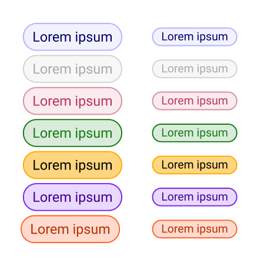


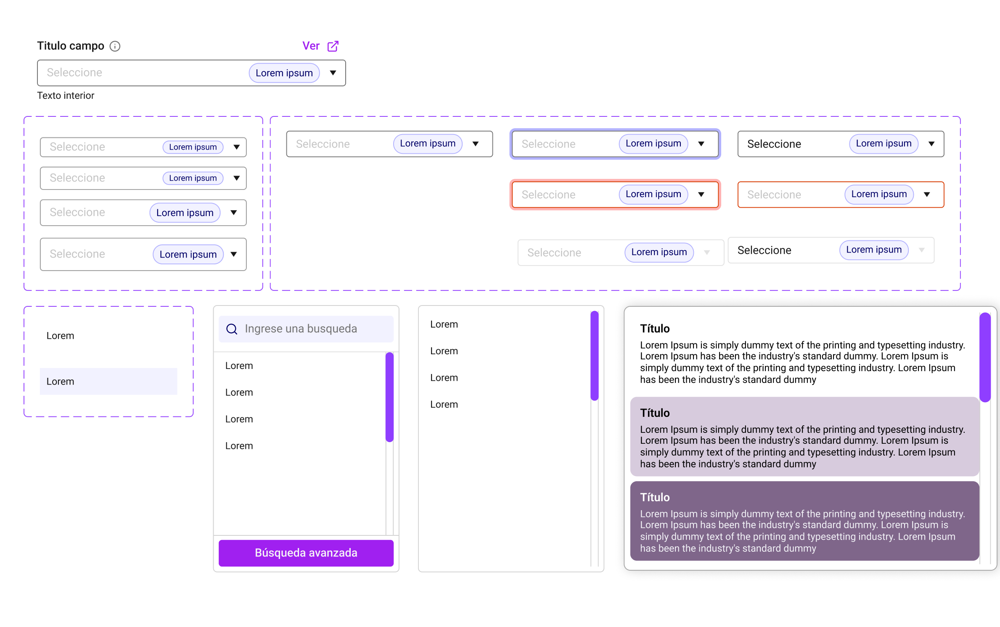
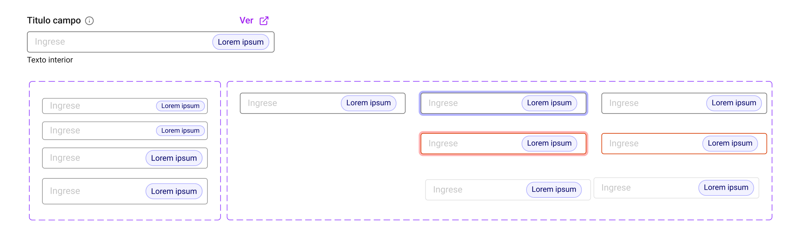
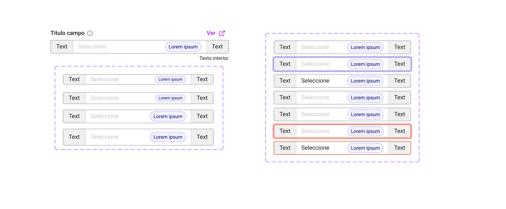

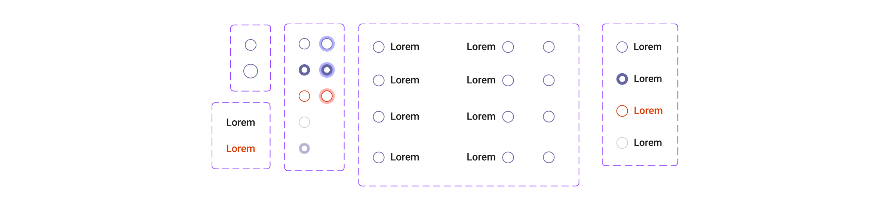
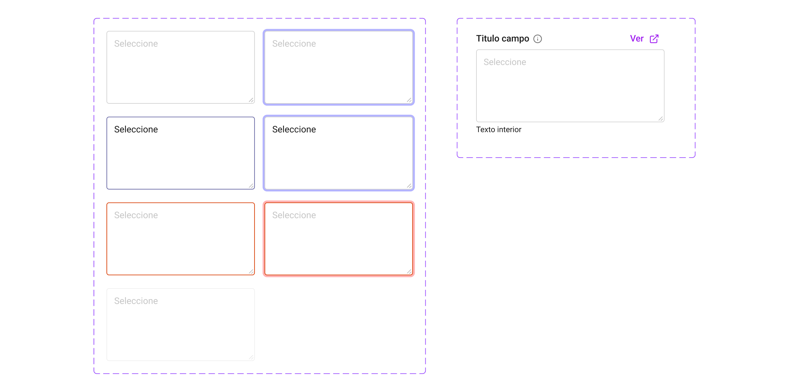
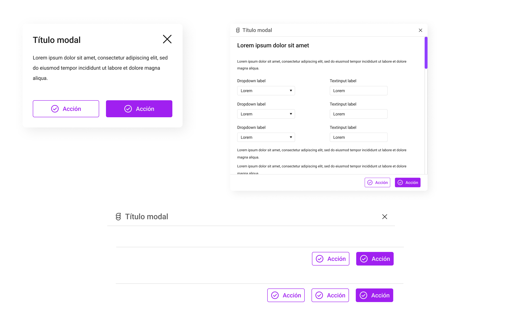
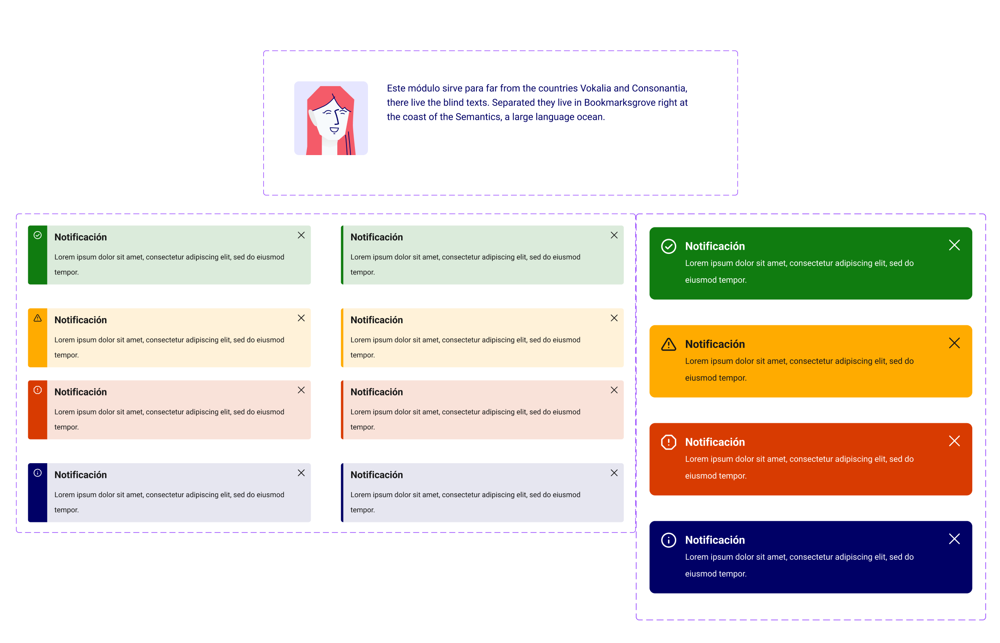

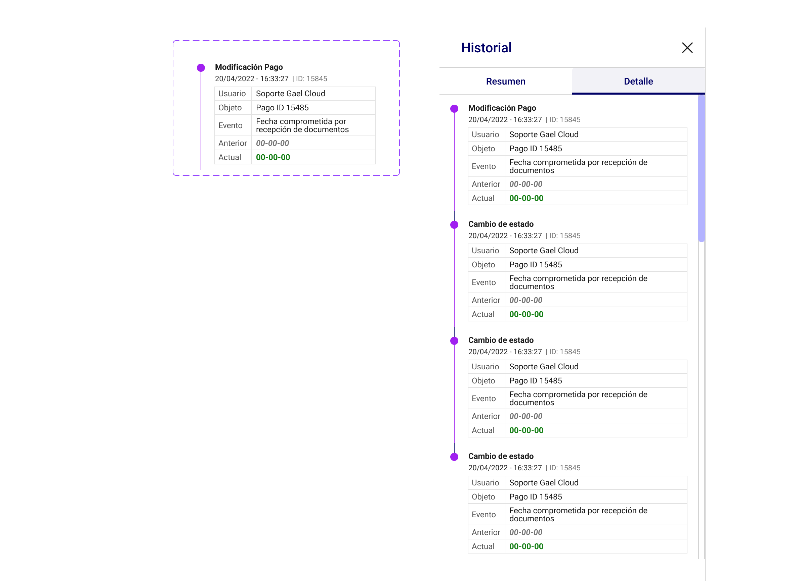
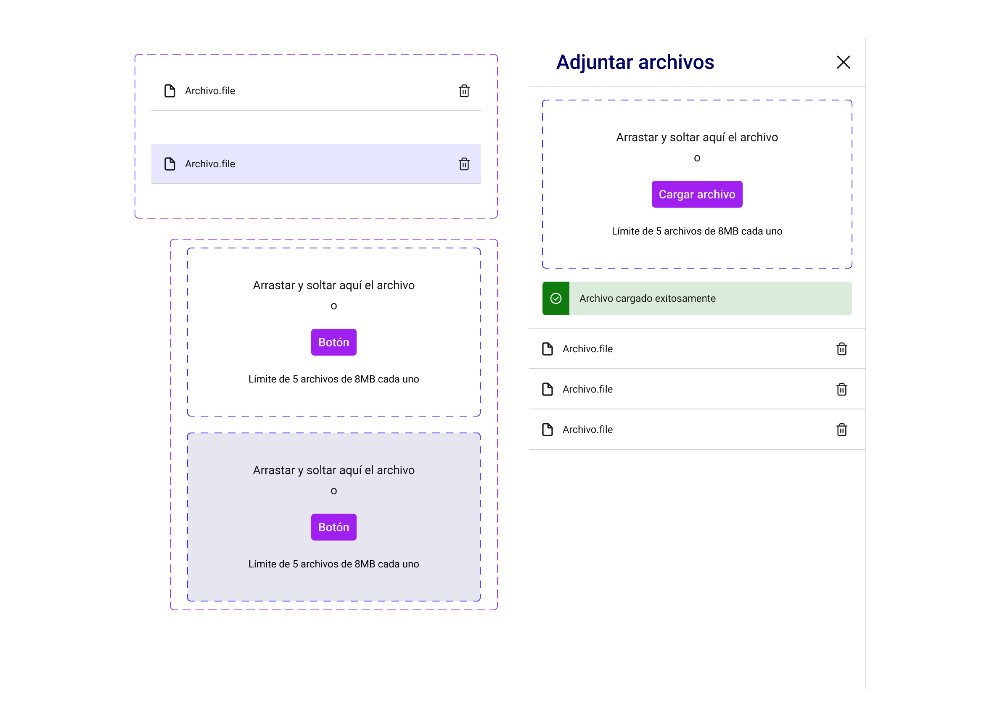

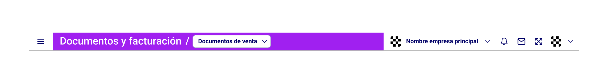
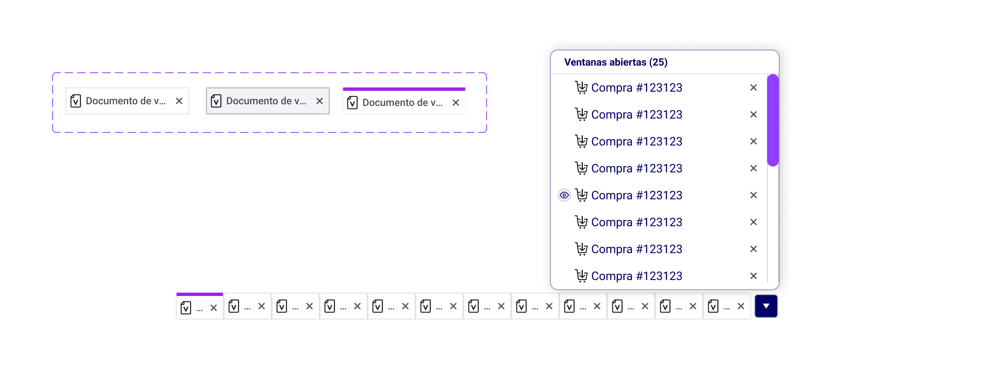
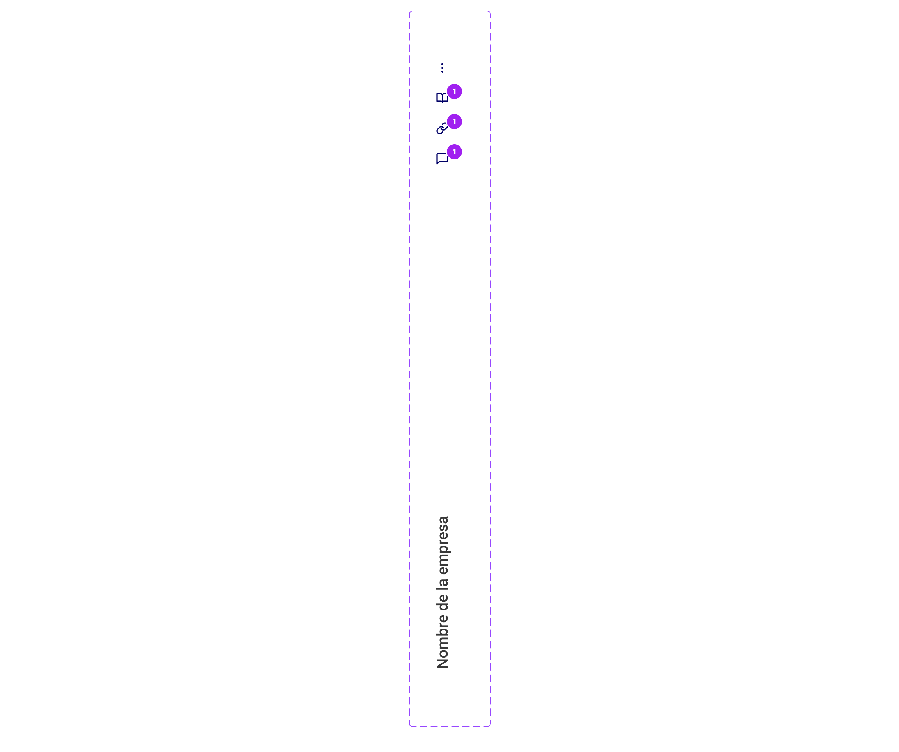
La nueva interfaz unifica todos los módulos bajo un sistema de diseño consistente, reduciendo la carga cognitiva y el tiempo de capacitación para nuevos usuarios.
Módulo de tesorería
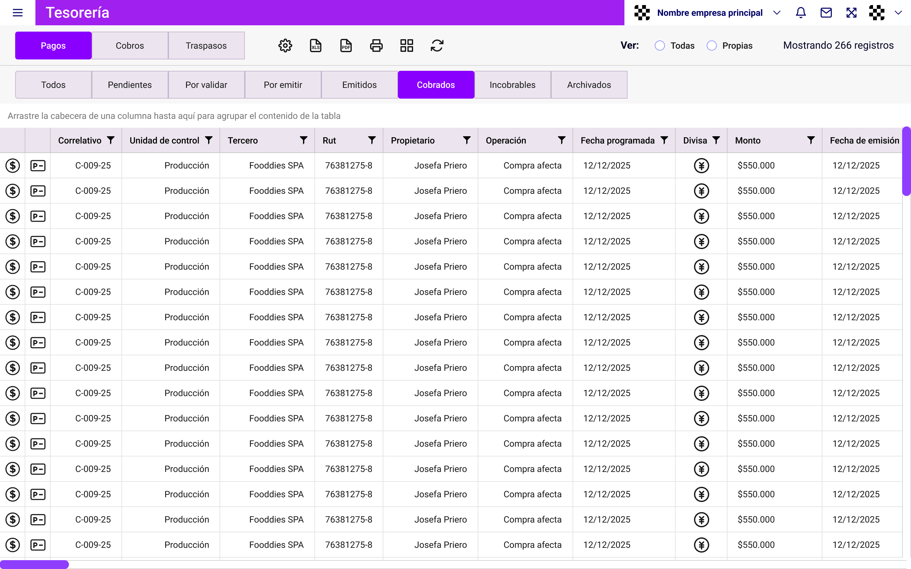
Módulo de compras
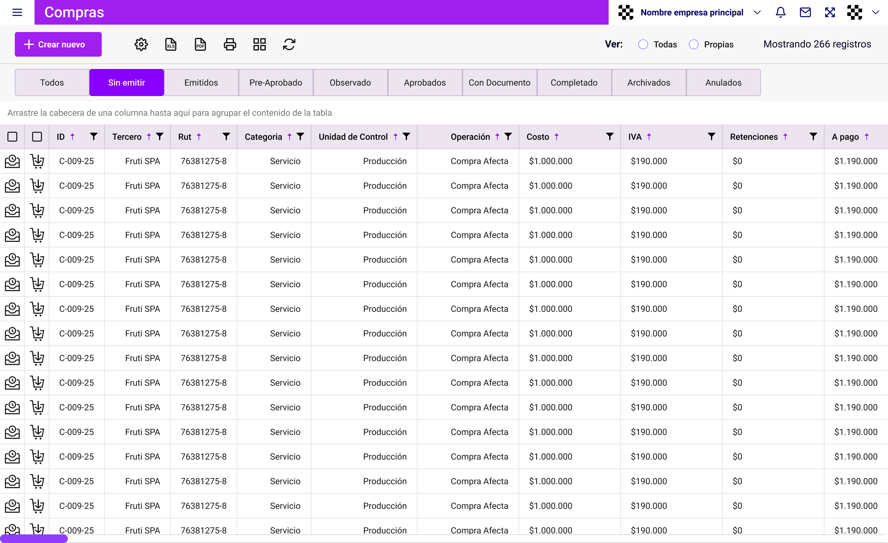
Más de 80 componentes reutilizables que garantizan consistencia visual y de interacción en todos los módulos del ERP.
Arquitectura de información reorganizada que reduce a 2 clicks el acceso a cualquier módulo crítico del sistema.
Feedback inmediato en formularios críticos que elimina errores en la entrada de datos antes de que lleguen al sistema.
Formulario de pago
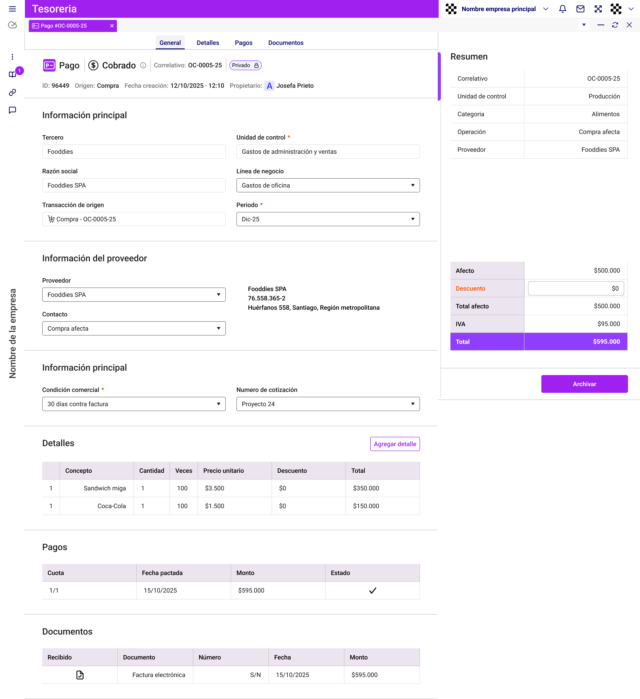
Formulario de compra
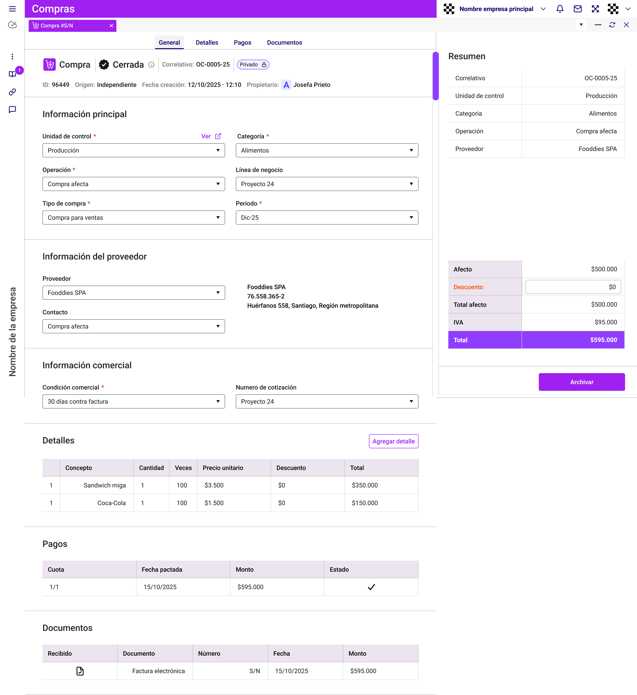
60%
reducción en tiempo de tarea
80+
componentes en design system
−90%
errores en entrada de datos críticos
2
clicks máx. para acceder a cualquier módulo
Migrar un sistema crítico requiere involucrar a los usuarios desde el día 1 — su conocimiento del sistema legacy es invaluable para no romper flujos de trabajo.
Un design system robusto no es solo una biblioteca de componentes; es un lenguaje compartido entre diseño y desarrollo que acelera la entrega y reduce inconsistencias.
La familiaridad con el sistema anterior genera resistencia al cambio — comunicar el "por qué" del rediseño fue tan importante como el diseño mismo.